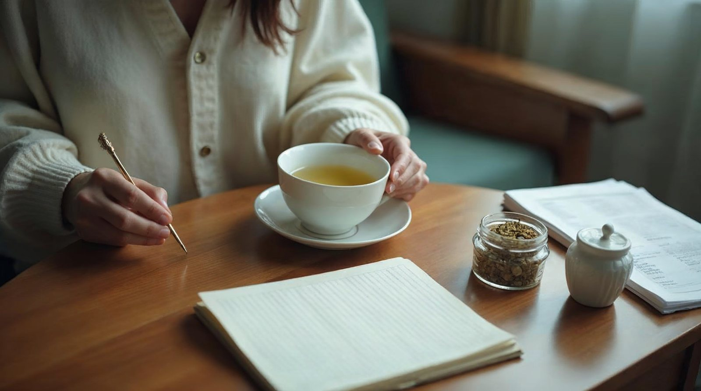
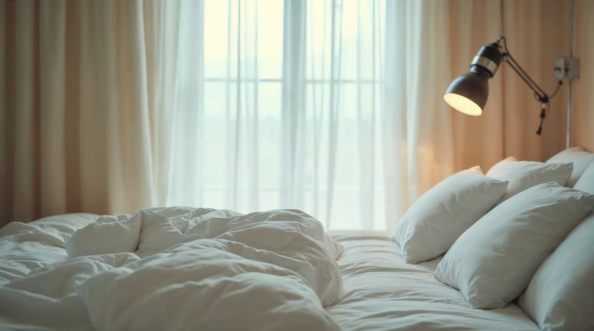
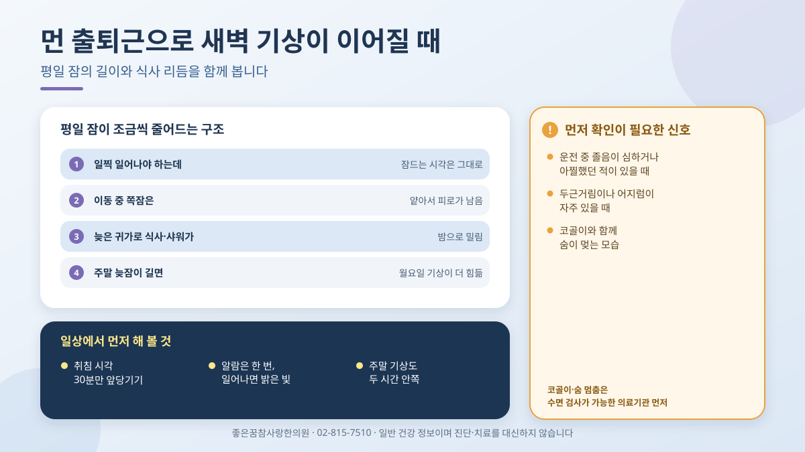

이종호 한의사 감수좋은꿈참사랑한의원 대표원장 (한의사 면허번호 19769)발행 2026-11-23 · 수정 2026-11-25
이 글의 차례
몸이 아니라 시간표가 잠을 정하는 날이 이어지면 주말에 몰아 자도 개운하지 않다는 분이 많습니다. 새벽에 집을 나서 지하철과 버스를 갈아타고, 밤늦게 돌아오면 씻고 눕기 바쁩니다. 잠의 길이를 지키는 작은 조정부터 시작해 볼 수 있습니다.
왜 이런 불편이 생길 수 있나요
- 일찍 일어나야 하는데 잠드는 시각은 그대로라 평일 잠이 조금씩 부족해집니다.
- 이동 중 쪽잠은 얕아서 피로를 충분히 풀어 주기 어렵습니다.
- 늦게 귀가하면 저녁 식사와 샤워, 화면 보는 시간이 밤으로 밀려 잠들기가 늦어집니다.
- 주말에 늦잠을 많이 자면 월요일 새벽 기상이 더 힘들어집니다.
- 새벽에 나서느라 아침을 거르고 늦은 밤에 몰아 먹으면 잠들기 전 속이 무거워 잠이 얕아질 수 있습니다.
먼저 이렇게 여쭙니다
- 평일에 하루 몇 시간 정도 자고 있나요?
- 이동 중에 졸고 퇴근 뒤에는 오히려 잠이 달아나나요?
- 퇴근 후 저녁 식사는 몇 시쯤 하시나요?
- 주말에 평일보다 몇 시간 더 자나요?
- 새벽 기상을 위해 알람을 몇 번 맞춰 두나요?
일상에서 먼저 해 볼 수 있는 것
- 평일 취침 시각을 30분만 앞당겨 보기
- 늦은 귀가 날에는 저녁을 가볍게 먹고 미지근한 물로 짧게 씻기
- 알람은 한 번만 맞추고 일어나자마자 밝은 빛 쬐기
- 이동 중에는 화면 대신 눈을 감고 쉬는 시간으로 쓰기
- 주말에도 기상 시각을 평일과 두 시간 안쪽으로 맞추기
- 전날 밤 옷과 가방을 미리 챙겨 두어 새벽 준비 시간을 줄이기
- 커피나 에너지 음료는 이른 오후까지로 정해 두기
상황별 예시
- 예를 들어 경기도에서 서울로 출퇴근하며 새벽 5시 반에 일어나는 직장인이 밤 12시가 넘어야 잠드는 경우, 잠드는 시각을 일주일마다 15~30분씩 앞당기고, 귀가 뒤 저녁은 가볍게 먹고 씻은 뒤에는 휴대폰 대신 조명을 낮춘 채 쉬는 시간을 둡니다.
- 예를 들어 새벽 첫차로 학원에 가는 수험생이 지하철에서 졸다가 밤에는 오히려 잠이 달아나는 경우, 이동 중 쪽잠은 20분 안쪽으로 짧게 하고 오후 늦게는 카페인 음료를 줄여 밤잠이 밀리지 않게 합니다.
- 예를 들어 새벽에 직접 운전해서 출근하는 경우에는 잠이 부족한 날 졸음운전 위험이 커집니다. 졸음이 오면 안전한 곳에 차를 세우고 쉬는 것이 먼저이고, 그런 날이 잦다면 대중교통으로 바꾸는 것도 함께 생각해 봅니다.
스스로 점검해 보세요
- 평일 잠이 6시간이 안 되는 날이 일주일에 세 번 이상이다.
- 알람을 여러 번 끄고서야 겨우 일어난다.
- 출퇴근길에 서서도 꾸벅꾸벅 존다.
- 퇴근 뒤 밤늦게 저녁을 먹고 바로 눕는다.
- 주말에 평일보다 세 시간 넘게 더 잔다.
- 오후 늦게까지 커피나 에너지 음료로 버틴다.
- 코골이나 숨 멈춤을 들은 적이 있거나, 낮 졸음이 업무에 지장을 준다.

한의원에서 함께 살필 수 있는 경우
- 평일 수면 시간이 부족해 낮 피로가 이어지는 경우 잠의 길이와 식사 리듬을 함께 살핍니다.
- 이동 중 서 있거나 앉아 있는 시간이 길어 허리와 다리가 무거운 경우 자세와 움직임을 함께 살핍니다.
- 주말에 몰아 자도 개운하지 않은 경우 평일과 주말의 리듬 차이를 함께 살핍니다.
좋은꿈참사랑한의원에서는 첫 방문 때 맥부터 짚습니다. 맥을 짚으면서 평일과 주말의 잠 시간, 이동 시간과 식사 시각을 여쭙고, 필요하다고 판단될 때 혀와 배를 살펴 피로와 소화 상태를 확인합니다. 오래 서 있거나 앉아 굳은 허리와 다리는 움직임을 함께 봅니다.
잠을 늘렸는데도 피로가 오래 이어진다면 원내 혈액 검사처럼 필요한 확인을 상의하기도 합니다. 그 뒤 취침 시각을 당기는 순서와 이동 중 쉬는 법을 함께 정하고, 필요하면 침이나 한약 상담을 이어 갑니다. 다음에 오시면 지난번 이야기를 이어서 여쭙고 잠 기록을 함께 봅니다. 상도역 3번 출구에서 걸어서 올 수 있어 출퇴근길에 들르기도 합니다.

얼마나 지켜보고 언제 상담할까요
- 취침 시각 30분 앞당기기와 주말 기상 시각 맞추기를 2주쯤 해 보며 평일 수면 시간과 낮 졸음을 적어 봅니다.
- 평일 잠을 조금 늘렸는데도 2~4주 넘게 낮 피로가 그대로라면 상담을 받아 보세요.
이렇게 기록해 오시면 상담이 쉬워집니다
- 평일·주말 기상 시각과 잠든 시각
- 출퇴근에 걸리는 시간과 이동 중 조는 시간
- 낮에 졸음이 가장 심한 시간대
- 코골이나 숨 멈춤을 들은 적이 있는지
- 아침·저녁 식사 시각과 커피를 마신 시각
이런 증상은 먼저 확인이 필요합니다
- 운전 중 졸음으로 아찔한 순간이 있었거나, 코골이와 함께 숨이 멈춘다는 말을 들은 경우
- 가슴 두근거림이나 어지럼이 자주 있거나, 스스로를 해칠 생각이 드는 경우(☎ 109로 바로 연락)
이런 신호가 있으면 한의원보다 가까운 병원이나 응급실을 먼저 찾으세요.
관련 글
- 겨울 아침에 일어나기 유난히 힘들 때는 무엇을 살피나요?
- 출근할 때도 퇴근할 때도 어두운 겨울에 기분이 가라앉으면 어떻게 살피나요?
- 코를 크게 골고 자다가 숨이 멎는 것 같을 때는 어떻게 하나요?

여쭙는 것
- 평일에 하루 몇 시간 정도 자고 있나요?
- 이동 중에 졸고 퇴근 뒤에는 오히려 잠이 달아나나요?
- 퇴근 후 저녁 식사는 몇 시쯤 하시나요?
생활에서 해 볼 것
- 평일 취침 시각을 30분만 앞당겨 보기
- 늦은 귀가 날에는 저녁을 가볍게 먹고 미지근한 물로 짧게 씻기
- 알람은 한 번만 맞추고 일어나자마자 밝은 빛 쬐기
한의원에서 함께 살필 것
- 평일 수면 시간이 부족해 낮 피로가 이어지는 경우 잠의 길이와 식사 리듬을 함께 살…
- 이동 중 서 있거나 앉아 있는 시간이 길어 허리와 다리가 무거운 경우 자세와 움직임…
- 주말에 몰아 자도 개운하지 않은 경우 평일과 주말의 리듬 차이를 함께 살핍니다.
먼저 확인이 필요한 신호
- 운전 중 졸음으로 아찔한 순간이 있었거나, 코골이와 함께 숨이 멈춘다는 말을 들은 경우
- 가슴 두근거림이나 어지럼이 자주 있거나, 스스로를 해칠 생각이 드는 경우(109로…
한눈에 보는 표
| 구분 | 핵심 |
|---|---|
| 여쭙는 것 | 평일에 하루 몇 시간 정도 자고 있나요? 이동 중에 졸고 퇴근 뒤에는 오히려 잠이 달아나나요? |
| 생활에서 해 볼 것 | 평일 취침 시각을 30분만 앞당겨 보기 늦은 귀가 날에는 저녁을 가볍게 먹고 미지근한 물로 짧게 씻기 |
| 한의원에서 함께 살필 것 | 평일 수면 시간이 부족해 낮 피로가 이어지는 경우 잠의 길이와 식사 리듬을 함께 살핍니다. 이동 중 서 있거나 앉아 있는 시간이 길어 허리와 다리가 무거운 경우 자세와 움직임을 함께 살핍니다. |
| 먼저 확인이 필요한 신호 | 운전 중 졸음으로 아찔한 순간이 있었거나, 코골이와 함께 숨이 멈춘다는 말을 들은 경우 가슴 두근거림이나 어지럼이 자주 있거나, 스스로를 해칠 생각이 드는 경우(109로 바로 연락) |
자주 묻는 질문
지하철에서 자는 것은 잠으로 쳐도 되나요?
이동 중 선잠은 얕은 편이라 밤잠을 대신하기는 어렵습니다. 취침 시각을 조금이라도 앞당기는 편이 도움이 됩니다.
주말에 몰아서 자도 되나요?
어느 정도는 쉬어도 좋지만 너무 길면 평일 리듬이 더 힘들어질 수 있습니다.
아침에 일어나자마자 커피를 마셔도 되나요?
괜찮은 경우가 많지만 오후 늦게까지 이어 마시면 밤잠에 영향을 줄 수 있어, 카페인은 이른 오후까지로 정해 두는 편이 좋습니다.
출퇴근길에 할 수 있는 쉬는 방법이 있나요?
앉을 수 있다면 눈을 감고 어깨 힘을 빼며 숨을 천천히 내쉬는 것만으로도 쉬는 시간이 됩니다. 서서 갈 때는 양발에 체중을 고르게 싣고 무릎을 살짝 풀어 두세요.
잠이 부족한 날 낮잠은 어떻게 자는 게 좋나요?
점심시간에 15~20분쯤 눈을 붙이면 오후가 한결 덜 무겁다는 분이 많습니다. 다만 오후 늦게 길게 자면 밤잠이 밀릴 수 있어 이른 오후에 짧게 자는 편이 좋습니다.
귀가가 늦어 잠을 늘리기 어렵다면 무엇부터 바꾸면 좋을까요?
집에 도착한 뒤 잠들기까지 걸리는 시간을 줄이는 것부터 살펴보세요. 저녁과 씻기를 간단히 하고 휴대폰을 일찍 내려놓으면 같은 귀가 시각에도 잠드는 시각을 조금 당길 수 있습니다.
출퇴근이 길어 허리와 다리가 무거운데 함께 봐 주나요?
오래 서 있거나 앉아 있으면 허리와 종아리가 쉽게 무거워집니다. 진료 때 잠과 함께 자세와 움직임도 살피니, 하루 중 언제 가장 무거운지 적어 오시면 도움이 됩니다.
좋은꿈참사랑한의원은 재진 때 지난번 이야기부터 이어서 여쭙니다. 진료시간과 예약은 오시는 길에서 확인하세요.
어디서 상담받을 수 있나요?
좋은꿈참사랑한의원은 서울 동작구 만양로2길 2 신성빌딩 3층·5층(서울 동작구 상도동, 7호선 상도역 3번 출구 근처)에 있습니다. 한의사 3명(이종호 대표원장, 조영기 수석진료원장, 정원영 진료원장)이 진료합니다. 진료시간은 평일 09:30~20:00(점심 13:00~14:00), 토·일·공휴일 09:30~15:00이며, 방문 전 전화로 확인을 권합니다. 예약은 네이버 예약, 카카오톡 상담, 전화 02-815-7510로 받습니다.
이 글은 일반적인 건강 정보이며 개인의 진단이나 치료를 대신하지 않습니다. 증상이 있거나 복용 중인 약이 있다면 진료를 통해 확인하세요. 치료 효과는 개인마다 다를 수 있습니다.
작성 기준: 일반적으로 알려져 있는 건강 정보를 참고해 정리했습니다(대표원장 감수). 증상 기록은 1~2주 동안 하루 1회, 비슷한 시간에 적어 오시면 지난 상태와 비교하기 쉽습니다.